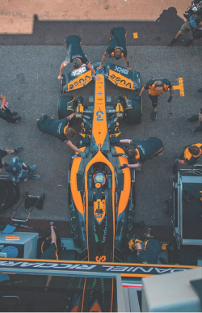

Technologies behind Formula 1 cars
Formula 1 cars are the pinnacle of engineering and innovation, built for one purpose: to be the fastest on the planet. Every detail is designed with precision, making these machines as much technological wonders as they are speed demons. At their core is the hybrid power unit, a combination of a turbocharged engine and electric motors. This system not only produces immense power but also recovers energy from braking and exhaust heat, making it a marvel of efficiency and sustainability. The aerodynamics of an F1 car are equally impressive. The car's wings, floor, and other surfaces create downforce that keeps it glued to the track, allowing it to corner at incredible speeds. With the Drag Reduction System (DRS), drivers can reduce drag on straights for extra speed, adding a strategic element to overtaking. Lightweight carbon fiber chassis ensures the car is both strong and incredibly light, while state-of-the-art sensors gather real-time data, helping teams optimize performance during every second of the race. Even the tires are high-tech, designed to deliver maximum grip under intense conditions. Managing their temperature and wear is critical, as even the smallest misstep can cost a team the race. Formula 1 technology isn’t just about speed—it’s about precision, innovation, and pushing the boundaries of what’s possible. It’s where engineering meets art, creating machines that inspire and define the future.
